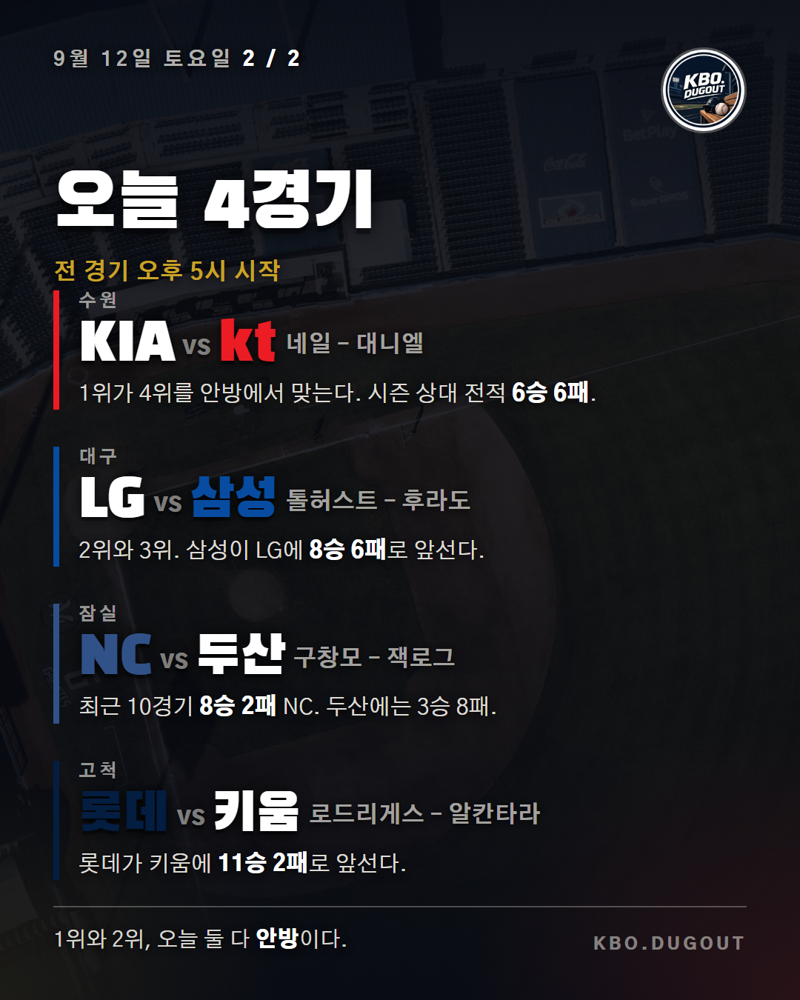
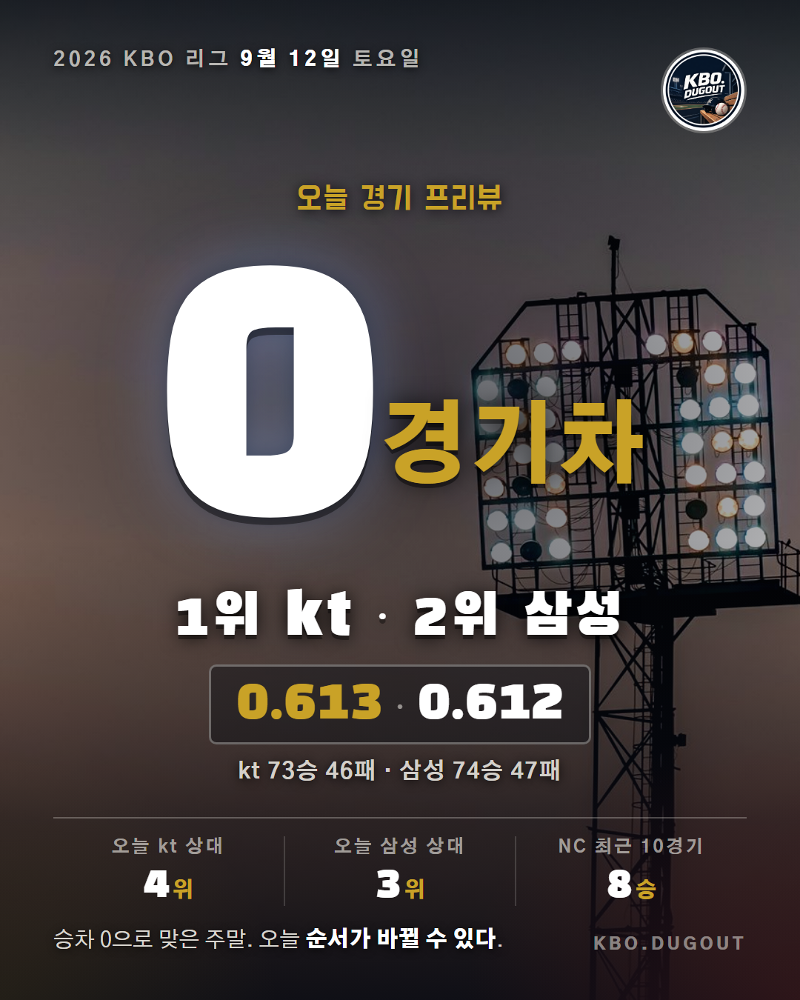

Draft #13


승률 0.613의 kt와 0.612의 삼성이 승차 없이 맞물린 채 오늘을 맞는다. 두 팀 다 안방이고, 상대가 3위와 4위다. kt는 수원에서 대니엘을 올려 KIA 네일과 붙고, 삼성은 대구에서 후라도를 내세워 LG 톨허스트를 상대한다. 잠실에서는 최근 10경기 8승 2패로 올라온 NC가 구창모를 앞세워 두산 잭로그와 만나고, 고척에서는 롯데 로드리게스와 키움 알칸타라가 맞선다. 네 경기 모두 오후 5시에 시작한다.
kt 73승 46패 · 삼성 74승 47패 · NC 최근 10경기 8승 2패
#KBO #프로야구 #야구
QA unsourced_name
Draft #14


오늘 KBO는 네 경기, 모두 오후 5시에 시작합니다.
1위 kt와 2위 삼성은 승차 없이 승률 0.613과 0.612로 맞물려 있습니다. 오늘은 두 팀 다 안방 경기인데 상대가 각각 4위 KIA와 3위 LG입니다.
수원에서는 kt 대니엘과 KIA 네일이 선발로 만납니다. 올 시즌 두 팀 상대 전적은 6승 6패로 팽팽합니다.
대구에서는 삼성 후라도와 LG 톨허스트가 맞붙습니다. 삼성이 LG에 8승 6패로 앞서 있습니다.
잠실에서는 최근 10경기 8승 2패로 흐름을 탄 NC가 구창모를 내고, 두산은 잭로그로 맞섭니다. 다만 시즌 상대 전적은 두산이 8승 3패로 크게 앞섭니다.
고척에서는 롯데 로드리게스와 키움 알칸타라가 만납니다. 롯데가 키움에 11승 2패로 앞서 있습니다.
kt 73승 46패 · 삼성 74승 47패 · NC 최근 10경기 8승 2패
#KBO #프로야구 #야구
QA 없음